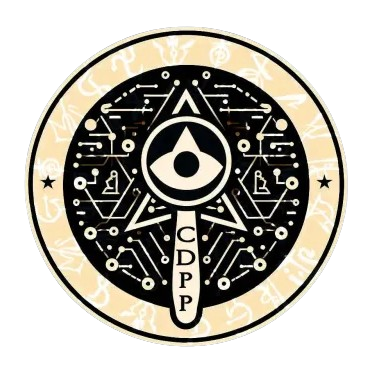

|  |
C.D.P.P
Centro de Desenvolvimento e Pesquisa Paranormal
|
|
Nota adicional:
A empresa deixou de prestar serviços para a Ordo Realitas em 2012 devido à quebra de regras.
|
1.2 - Testes imorais e sem consentimento em animais e seres humanos, principalmente em crianças.
1.3 - Envolvimento com cultistas e seitas que ameaçam a Realidade.
1.4 - Roubo de informações de documentos secretos da Ordem.
1.5 - Crimes legais como assassinato, furto, sequestro, tráfico de drogas, tráfico humano, tortura, extorsão, ameaça, abuso de poder, sonegação de impostos, fraude, desacato a autoridade e quebra de leis trabalhistas.
| 001 | 002 | 003 | 004 |
| 005 | 006 | 007 | 008 |
| 009 | 010 | 011 | 012 |
| 013 | 014 | 015 | 016 |